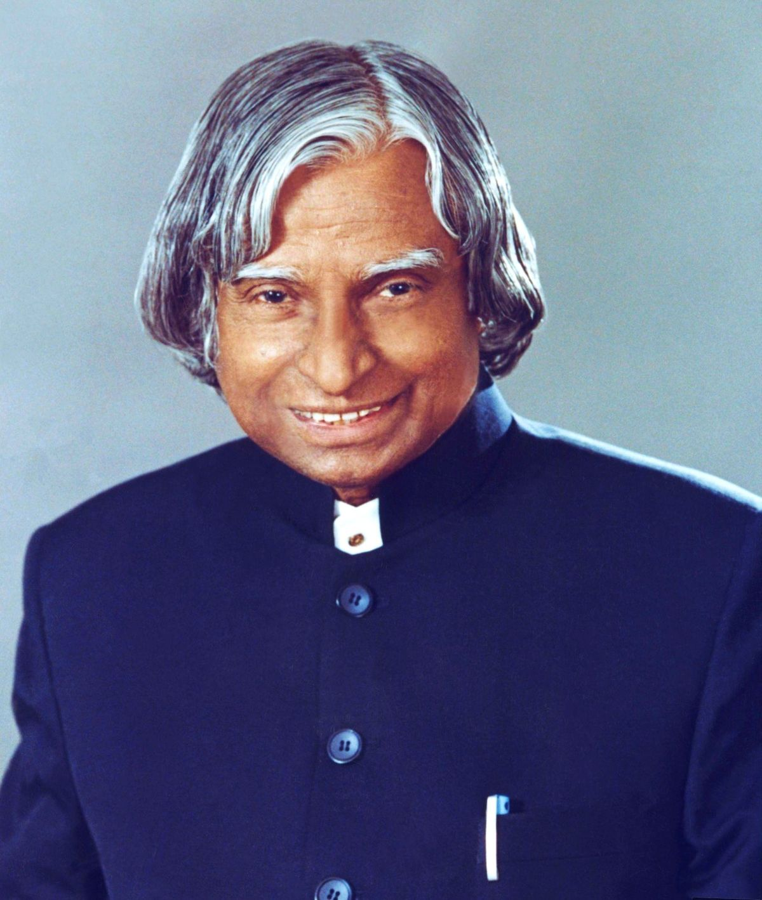

A. P. J.Abdul Kalam
1931-2015
Missile Man Of India
A.P.J. Abdul Kalam (Avul Pakir Jainulabdeen Abdul Kalam) was one of India’s most respected scientists, teachers, and the 11th President of India. He was born on 15 October 1931 in Rameswaram, Tamil Nadu, into a humble and financially struggling family. Despite limited means, Kalam grew up with curiosity, discipline, and strong values of hard work. As a child, he sold newspapers to support his family but never gave up on his education. Kalam studied physics and later aeronautical engineering from the Madras Institute of Technology. His passion for science and flight led him to join the Defence Research and Development Organisation (DRDO) and later the Indian Space Research Organisation (ISRO). At ISRO, he played a key role in India’s first satellite launch vehicle (SLV-3), which successfully deployed the Rohini satellite into orbit in 1980. This achievement helped India enter the space age. After his success in space research, Kalam shifted to important defense projects. He became the chief architect behind India’s missile development programs, earning him the title “Missile Man of India.” His leadership contributed to the creation of missiles like Agni and Prithvi. He also played a major role in India’s nuclear tests at Pokhran in 1998, which established India as a nuclear power in the world.In 2002, he became the 11th President of India, known as the “People’s President.” He was loved by people of all ages because of his simple lifestyle, humility, and accessibility. Even after his presidency ended in 2007, Kalam dedicated himself to teaching and inspiring students. He believed deeply in the power of youth, calling them the future of the nation. His speeches, books, and interactions encouraged millions to dream big and work hard with honesty.
Some of his well-known books include:
- Wings of Fire (his autobiography)
- Ignited Minds
- India 2020
On 27 July 2015, while delivering a lecture to students at IIM Shillong, he suddenly collapsed and passed away due to cardiac arrest. His death was mourned across India and around the world, as he was remembered not just as a scientist or president, but as a teacher at heart.
Why Kalam is remembered:
- He rose from poverty to become a global leader in science
- He served the nation with integrity and simplicity
- He inspired millions of young people to believe in themselves
- He believed in dreams, discipline, knowledge, and kindness
One of his most famous quotes:
“Dream, dream, dream. Dreams transform into thoughts and thoughts result in action.”